1930
Lịch sử Đảng Cộng sản Việt Nam
Cương lĩnh
chính trị
& Luận cương
So sánh hai văn kiện chính trị đặt nền móng cho cách mạng Việt Nam
Lớp thuyết trình
CLC-QTL49A
Nguồn ảnhPinterest
Phần I · Mở đầu
Đặt vấn đề
Bối cảnh lịch sử
- Năm 1930 là cột mốc đặc biệt: Đảng Cộng sản Việt Nam ra đời.
- Liên tiếp thông qua hai văn kiện chính trị cốt lõi định hình đường lối cách mạng.
Hai văn kiện trọng đại
- Cương lĩnh chính trị đầu tiên (02/1930) gồm Chánh cương vắn tắt & Sách lược vắn tắt.
- Luận cương chính trị (10/1930) do đồng chí Trần Phú khởi thảo.
Vì sao quan trọng
So sánh giúp hiểu rõ quá trình hình thành và hoàn thiện đường lối cách mạng của Đảng.

Chủ tịch Hồ Chí Minh · chân dung 1946
Phần I · Mở đầu
Bối cảnh Việt Nam năm 1930
Tác động quốc tế
- Khủng hoảng kinh tế thế giới 1929 → 1933 khiến sản xuất đình đốn.
- Liên Xô đạt thành tựu rực rỡ; phong trào cách mạng dâng cao.
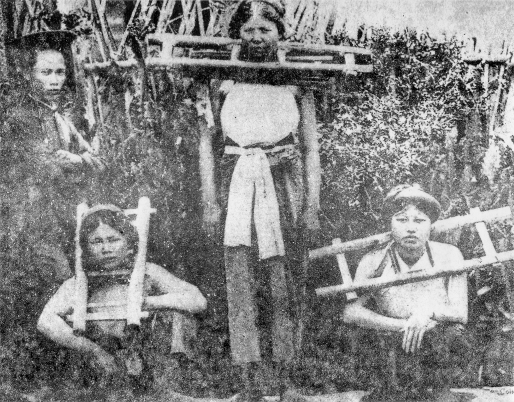
Nông dân Đông Dương
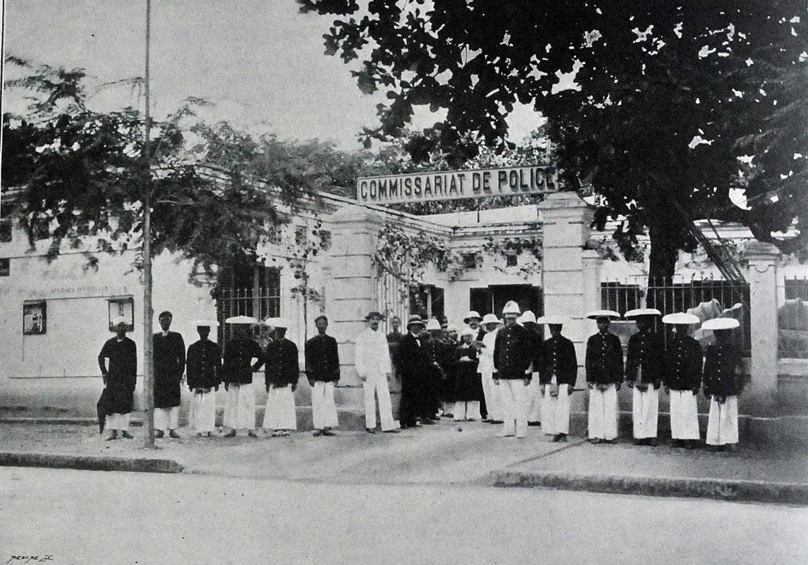
Cảnh sát Pháp tại Hà Nội
Tình hình trong nước
- Pháp tăng cường bóc lột thuộc địa để bù đắp thiệt hại chính quốc.
- Chiến dịch "khủng bố trắng" tàn bạo sau khởi nghĩa Yên Bái.
Kết quả
Mâu thuẫn giữa toàn thể dân tộc Việt Nam với đế quốc Pháp và tay sai trở nên gay gắt hơn bao giờ hết.
Phần I · Mở đầu
Cao trào cách mạng & sự ra đời hai văn kiện
02/1930
ĐCSVN ra đời, thông qua Cương lĩnh (Nguyễn Ái Quốc khởi thảo)
01→04/1930
Bãi công & biểu tình nông dân nổ ra liên tiếp
05/1930
Cao trào 1/5: 16 bãi công, 34 biểu tình
09/1930
Đỉnh cao Xô viết Nghệ Tĩnh
10/1930
Hội nghị TƯ I, đổi tên ĐCS Đông Dương, thông qua Luận cương
18/11/1930
Chỉ thị lập "Hội Phản đế đồng minh"
Năm 1930 là một năm dồn dập: Đảng ra đời, phong trào bùng nổ, hai văn kiện chính trị nối tiếp nhau, đặt nền móng cho cách mạng Việt Nam hiện đại.
II
Văn kiện thứ nhất
Cương lĩnh
chính trị 02/1930
Hoàn cảnh ra đời · Nội dung · Ý nghĩa
Cương lĩnh 02/1930 · Hoàn cảnh
Hoàn cảnh lịch sử
01
Xã hội thuộc địa nửa phong kiếnTồn tại hai mâu thuẫn cơ bản: dân tộc và giai cấp.
02
Khủng hoảng đường lốiPhong trào yêu nước liên tục thất bại vì thiếu đường lối phù hợp.
03
Tìm đường cứu nướcNăm 1911, Nguyễn Ái Quốc ra đi, tìm thấy con đường cách mạng vô sản.
04
Chuẩn bị tổ chứcNăm 1925 lập Hội Việt Nam Cách mạng Thanh niên tại Quảng Châu.
05
Ba tổ chức phân liệtNăm 1929, ba tổ chức cộng sản hoạt động riêng rẽ, tranh giành ảnh hưởng.
06
Hội nghị hợp nhất6/1 → 7/2/1930 tại Hương Cảng, hợp nhất thành Đảng Cộng sản Việt Nam.
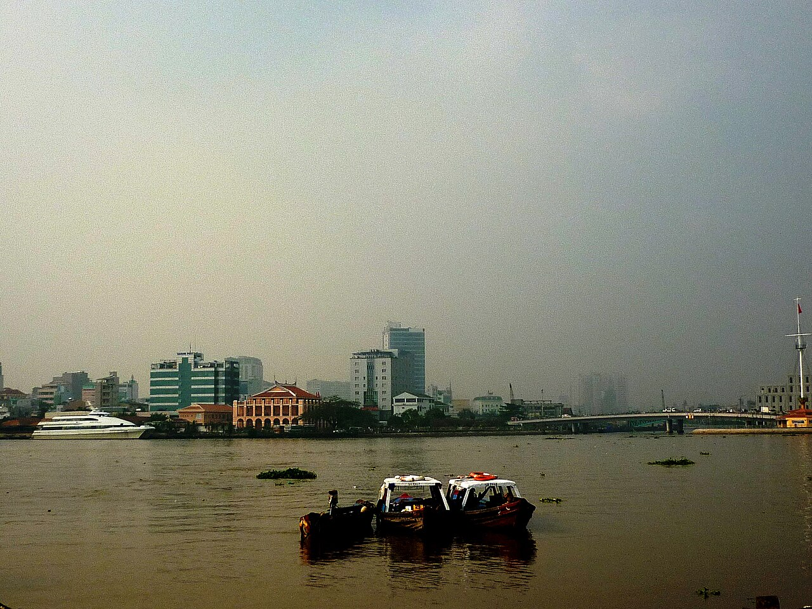
Bến Nhà Rồng · Sài Gòn · 5/6/1911, nơi Nguyễn Tất Thành ra đi tìm đường cứu nước
Cương lĩnh 02/1930 · Nội dung
Năm trụ cột nội dung
Đồng chí Nguyễn Ái Quốc · tại Pháp, đầu thập niên 1920 · người khởi thảo Cương lĩnh
1
Đường lối
chiến lược
chiến lược
"Làm tư sản dân quyền cách mạng và thổ địa cách mạng để đi tới xã hội cộng sản."
2
Nhiệm vụ
cách mạng
cách mạng
Đánh đổ đế quốc Pháp & phong kiến; lập chính phủ công nông binh; chia ruộng đất; ngày làm 8 giờ.
3
Lực lượng
cách mạng
cách mạng
Công nông là nòng cốt; liên minh tiểu tư sản, trí thức; lợi dụng phú nông, trung tiểu địa chủ.
4
Lãnh đạo
cách mạng
cách mạng
Đảng Cộng sản Việt Nam, đội tiên phong của giai cấp công nhân, lấy Mác Lênin làm nền tảng.
5
Đoàn kết
quốc tế
quốc tế
Cách mạng Việt Nam là một bộ phận khăng khít của cách mạng vô sản thế giới.
Cương lĩnh 02/1930 · Ý nghĩa
Ý nghĩa lịch sử
Lý luận
- Vận dụng đúng đắn, sáng tạo chủ nghĩa Mác Lênin vào một nước thuộc địa nửa phong kiến.
Đường lối
- Kết hợp đúng đắn vấn đề dân tộc & giai cấp, lấy độc lập tự do làm cốt lõi.
Bước ngoặt
- Chấm dứt thời kỳ khủng hoảng đường lối và giai cấp lãnh đạo.
"Việc thành lập Đảng là một bước ngoặt vô cùng quan trọng trong lịch sử cách mạng Việt Nam ta."
Chủ tịch Hồ Chí MinhHồ Chí Minh (Tống Văn Sơ) · ảnh tại Nhà tù Victoria, Hồng Kông · năm 1930
III
Văn kiện thứ hai
Luận cương
chính trị 10/1930
Hoàn cảnh · Nội dung · Hạn chế
Luận cương 10/1930 · Hoàn cảnh
Hoàn cảnh ra đời
Phong trào dâng cao. Sau 02/1930, phong trào công nông phát triển mạnh, đỉnh cao là Xô viết Nghệ Tĩnh.
Đời sống cùng cực. Khủng hoảng kinh tế 1929 → 1933 đẩy mâu thuẫn dân tộc thêm gay gắt.
Yêu cầu thống nhất. Đảng còn non trẻ, cần văn kiện chính trị hệ thống để định hướng đường lối.
Tác động quốc tế. Quốc tế Cộng sản yêu cầu các đảng thuộc địa xây dựng đường lối cách mạng vô sản.
Sự kiện
14 → 31/10/1930, Hội nghị TƯ I tại Hương Cảng, Trần Phú được bầu Tổng Bí thư.
Đồng chí Trần Phú (1904 → 1931) · Tổng Bí thư đầu tiên của Đảng · chủ trì soạn thảo Luận cương
Luận cương 10/1930 · Nội dung
Nội dung cơ bản
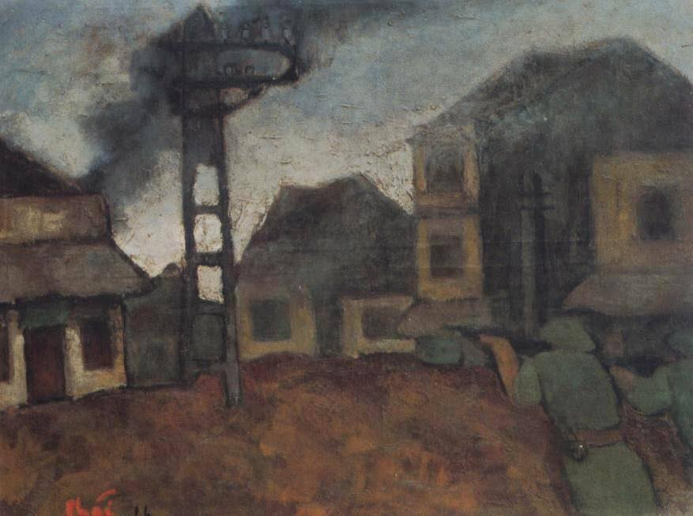
"Hà Nội · 1946" · tranh sơn dầu của họa sĩ Bùi Xuân Phái
1
Đường lối
chiến lược
chiến lược
Cách mạng Đông Dương qua hai giai đoạn: tư sản dân quyền tiến tới XHCN, bỏ qua TBCN.
2
Nhiệm vụ
cách mạng
cách mạng
Đánh đổ đế quốc Pháp & phong kiến; thực hiện thổ địa cách mạng triệt để; lập chính quyền công nông.
3
Lực lượng &
lãnh đạo
lãnh đạo
Giai cấp công nhân lãnh đạo qua Đảng; động lực chính là công nhân & nông dân.
4
Phương pháp
cách mạng
cách mạng
Chuẩn bị "võ trang bạo động"; khi có thời cơ giành chính quyền bằng bạo lực.
5
Quan hệ
quốc tế
quốc tế
Một bộ phận của cách mạng vô sản thế giới; đoàn kết với vô sản quốc tế, đặc biệt là vô sản Pháp.
Luận cương 10/1930 · Hạn chế
Hạn chế & sự bổ sung
Những hạn chế
- Chưa xác định đúng mâu thuẫn chủ yếu của xã hội thuộc địa.
- Nặng về đấu tranh giai cấp và cách mạng ruộng đất.
- Chưa đặt nhiệm vụ giải phóng dân tộc lên hàng đầu.
- Chưa xây dựng được mặt trận đoàn kết dân tộc rộng rãi.
Nguyên nhân
- Chịu ảnh hưởng tư tưởng "tả khuynh" của Quốc tế Cộng sản.
- Nhận thức chưa đầy đủ về thực tiễn cách mạng thuộc địa Việt Nam.
Bổ sung
18/11/1930 · Chỉ thị lập "Hội Phản đế đồng minh".
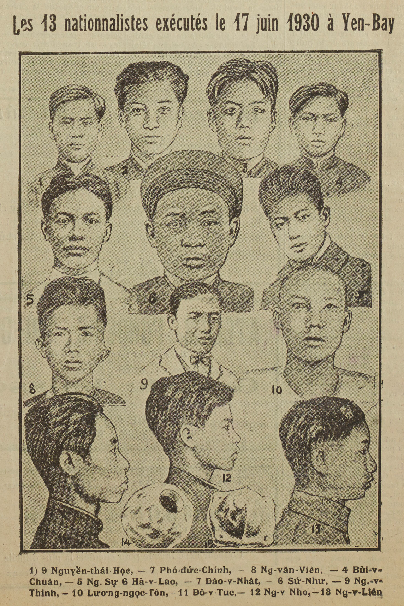
Chân dung 13 chí sĩ Yên Bái · bị thực dân Pháp xử tử ngày 17/6/1930 sau khởi nghĩa Yên Bái
IV
Trọng tâm bài thuyết trình
So sánh
hai văn kiện
Giống nhau · Khác nhau · Nguyên nhân
So sánh · Điểm giống nhau
Năm điểm tương đồng
Tại Hội nghị thành lập Đảng (3 → 7/2/1930) ở Hương Cảng, các đại biểu đã thông qua Chánh cương, Sách lược & Chương trình vắn tắt do Nguyễn Ái Quốc soạn thảo. Tháng 10/1930, Hội nghị TƯ I thông qua Luận cương chính trị do đồng chí Trần Phú soạn thảo.
01
Cùng nền tảng lý luậnĐều xây dựng trên chủ nghĩa Mác Lênin và lập trường cách mạng vô sản.
02
Phương hướng chiến lượcCùng xác định cách mạng Việt Nam thuộc phạm trù cách mạng vô sản.
03
Nhiệm vụ cách mạngĐánh đổ đế quốc và phong kiến trên cả ba phương diện chính trị, kinh tế, xã hội.
04
Phương pháp cách mạngDùng sức mạnh bạo lực cách mạng của quần chúng, bác bỏ cải lương.
05
Vị trí quốc tế & lãnh đạoĐoàn kết với vô sản thế giới; Đảng Cộng sản là lực lượng lãnh đạo.
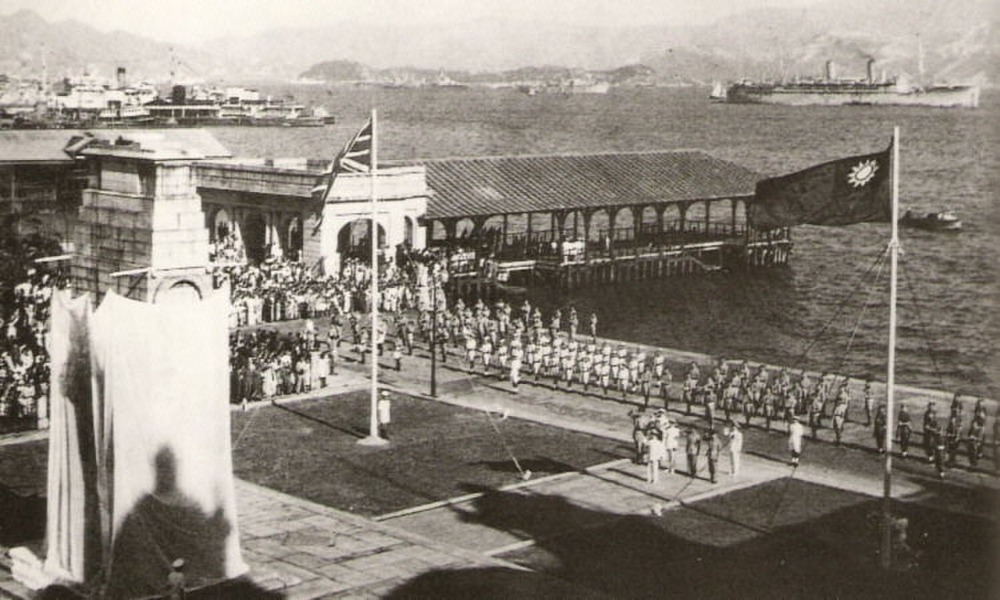
Hội nghị thành lập Đảng · 3 → 7/2/1930 tại Hương Cảng (Hồng Kông)
So sánh · Giống nhau (1)
Nền tảng lý luận & Phương hướng chiến lược
1Nền tảng lý luận chung
- Cùng dựa trên chủ nghĩa Mác Lênin và lập trường cách mạng vô sản.
- Vận dụng sáng tạo chủ nghĩa Mác Lênin vào thực tiễn Việt Nam.
- Giải quyết đúng đắn mối quan hệ dân tộc & giai cấp.
- Kết hợp chủ nghĩa yêu nước với chủ nghĩa quốc tế vô sản.
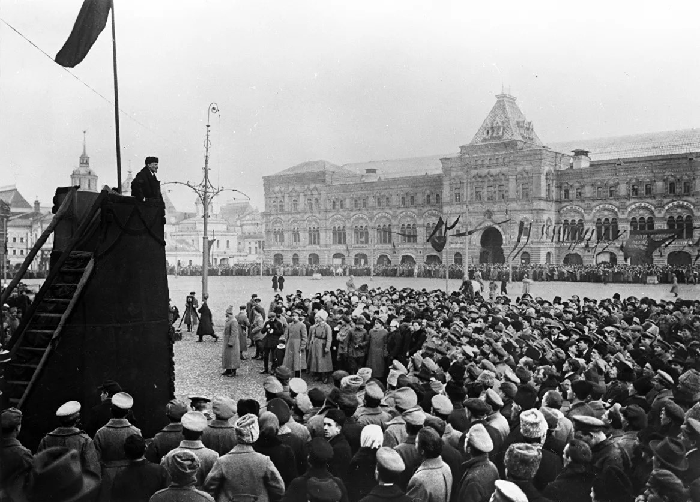
Chủ nghĩa Mác Lênin · nền tảng tư tưởng của Đảng
2Phương hướng chiến lược
- Đều xác định cách mạng Việt Nam thuộc phạm trù cách mạng vô sản.
- Đường lối: "Tư sản dân quyền cách mạng và thổ địa cách mạng".
- Là sự vận dụng sáng tạo chủ nghĩa Mác Lênin vào thực tiễn Đông Dương.
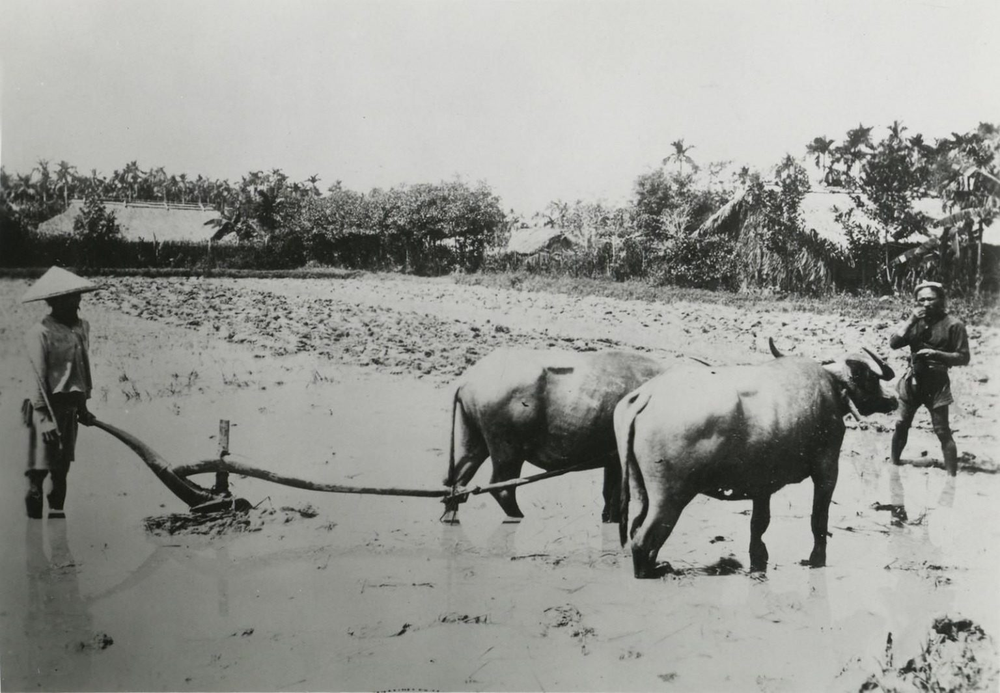
Nông dân Việt Nam · lực lượng cách mạng chủ yếu của thổ địa cách mạng
So sánh · Giống nhau (2)
3Nhiệm vụ cách mạng · Chính trị · Kinh tế · Xã hội
Về chính trị
- Đánh đổ đế quốc Pháp và phong kiến.
- Giành độc lập hoàn toàn cho dân tộc.
- Thành lập chính quyền công nông binh.
- Xây dựng lực lượng vũ trang cách mạng.
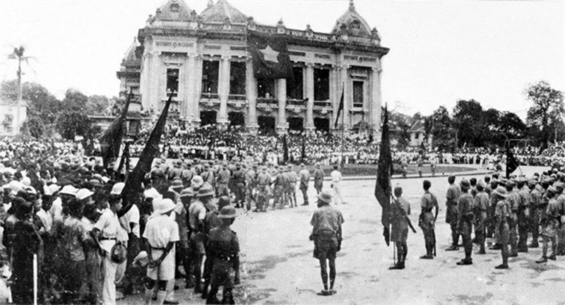
Phong trào cách mạng quần chúng · hướng tới chính quyền công nông
Về kinh tế
- Tịch thu cơ sở kinh tế của đế quốc, xóa bỏ quốc trái.
- Thực hiện "người cày có ruộng", giảm sưu thuế.
- Phát triển công nông nghiệp, ngày làm 8 giờ.
Xóa bỏ sưu thuế · tịch thu cơ sở đế quốc
Về xã hội
- Quyền tự do tổ chức cho quần chúng.
- Nam nữ bình quyền, phổ thông giáo dục.
- Công nông hóa đời sống xã hội.
Phong trào phụ nữ · nam nữ bình quyền
So sánh · Giống nhau (3)
Phương pháp cách mạng & Quan hệ quốc tế
4Phương pháp cách mạng
- Sử dụng sức mạnh quần chúng để đánh đổ đế quốc và phong kiến.
- Giành chính quyền về tay công nông bằng con đường cách mạng.
- Khẳng định vai trò của bạo lực cách mạng, bác bỏ cải lương và thỏa hiệp.
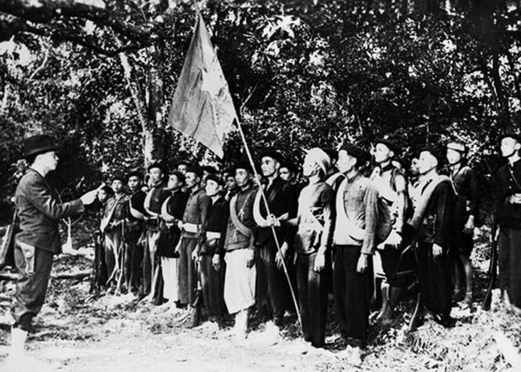
Sức mạnh bạo lực cách mạng của quần chúng · con đường giành chính quyền
5Vị trí quốc tế & vai trò lãnh đạo
- Đoàn kết với các dân tộc bị áp bức và giai cấp vô sản thế giới.
- Kết hợp chủ nghĩa yêu nước với chủ nghĩa quốc tế vô sản.
- Khẳng định Đảng Cộng sản là lực lượng lãnh đạo cách mạng.
- Thể hiện vai trò tiên phong của giai cấp công nhân.
Đoàn kết quốc tế · các đảng cộng sản đoàn kết trong phong trào vô sản thế giới
So sánh · Điểm khác nhau
Bảng so sánh sáu tiêu chí
Tiêu chí
Cương lĩnh 02/1930
Luận cương 10/1930
Tính chất cách mạng
Tư sản dân quyền & thổ địa cách mạng để đi tới xã hội cộng sản
Tư sản dân quyền có tính chất thổ địa & phản đế, tiến lên CNXH
Nhiệm vụ chủ yếu
Đặt giải phóng dân tộc lên hàng đầu, chống đế quốc & phong kiến
Nhấn mạnh đấu tranh giai cấp và cách mạng ruộng đất
Lực lượng cách mạng
Tập hợp rộng rãi: công nông, tiểu tư sản, trí thức, tư sản dân tộc
Chủ yếu dựa vào công nhân và nông dân
Tập hợp lực lượng
Đề cao đại đoàn kết dân tộc, mặt trận thống nhất chống đế quốc
Chủ yếu nhấn mạnh liên minh công nông
Dân tộc & giai cấp
Ưu tiên vấn đề dân tộc, giải phóng dân tộc là cấp bách nhất
Đề cao đấu tranh giai cấp, chưa đặt dân tộc trung tâm
Quan hệ quốc tế
Gắn với phong trào giải phóng dân tộc & cách mạng thế giới
Nhấn mạnh cách mạng vô sản thế giới & Quốc tế Cộng sản
So sánh · Nguyên nhân
Nguyên nhân của sự khác biệt
Nguyễn Ái Quốc
Trần Phú
Chủ quan · Người soạn thảo
- Nguyễn Ái Quốc trực tiếp khảo sát phong trào nhiều thuộc địa, tư duy thực tiễn, ưu tiên dân tộc.
- Trần Phú đào tạo bài bản tại ĐH Phương Đông, chịu ảnh hưởng quan điểm vô sản quốc tế.
Khách quan · Quốc tế Cộng sản
- Phong trào cộng sản quốc tế chịu ảnh hưởng khuynh hướng "tả khuynh".
- Cách mạng Việt Nam bị nhìn theo khuôn mẫu chung, chưa phản ánh đầy đủ thực tế.
Thêm
Đảng vừa thành lập, trình độ lý luận và kinh nghiệm còn hạn chế.
So sánh · Điểm phát triển
Điểm phát triển lý luận của Luận cương
"Bỏ qua thời kỳ tư bản mà tranh đấu thẳng lên con đường xã hội chủ nghĩa."
Điểm mới mà Chính cương & Sách lược vắn tắt chưa đề cập đầy đủChính trị
- Sự lãnh đạo của giai cấp vô sản, liên minh công nông và chính quyền công nông.
Kinh tế
- Phát triển công nghiệp, tịch thu cơ sở kinh tế lớn của tư bản nước ngoài.
Xã hội
- Giải phóng con người, ngày làm 8 giờ, nam nữ bình quyền, dân tộc tự quyết.
Hiện thực hóa
Sau 1954 miền Bắc tiến lên CNXH · Đại hội IX (2001): "bỏ qua chế độ tư bản chủ nghĩa".
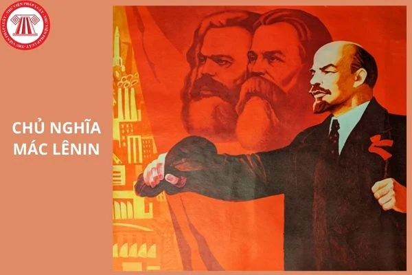
Lý luận cách mạng vô sản · nền tảng cho con đường bỏ qua TBCN, tiến thẳng lên CNXH
Phần V · Giá trị lịch sử & liên hệ thực tế
Giá trị lịch sử
Cương lĩnh 02/1930
- Xác định đúng con đường cách mạng Việt Nam.
- Giải quyết đúng đắn quan hệ dân tộc & giai cấp.
- Xác định đúng lực lượng & vai trò lãnh đạo của Đảng.
- Đặt nền móng cho thắng lợi Cách mạng Tháng Tám.
Luận cương 10/1930
- Khẳng định con đường tiến lên CNXH, bỏ qua TBCN.
- Xác định hai nhiệm vụ chiến lược: chống đế quốc & chống phong kiến.
- Phát triển lý luận về phương pháp cách mạng.
- Củng cố phong trào cách mạng 1930 → 1931.
Đảng kỳ Đảng Cộng sản Việt Nam · biểu tượng tiếp nối giá trị 1930
Phần V · Giá trị lịch sử & liên hệ thực tế
Liên hệ thực tế hiện nay
01
Kiên định mục tiêuĐộc lập dân tộc gắn liền với CNXH, sợi chỉ đỏ xuyên suốt.
02
Xây dựng ĐảngGiữ vai trò lãnh đạo; chống suy thoái, "tự diễn biến".
03
Đại đoàn kếtHuy động mọi nguồn lực, tăng cường đồng thuận xã hội.
04
Đối ngoạiĐa phương hóa, hội nhập quốc tế, "ngoại giao cây tre".
05
Phát triển vì con ngườiKinh tế thị trường định hướng XHCN; hướng tới "Dân giàu, nước mạnh, dân chủ, công bằng, văn minh".
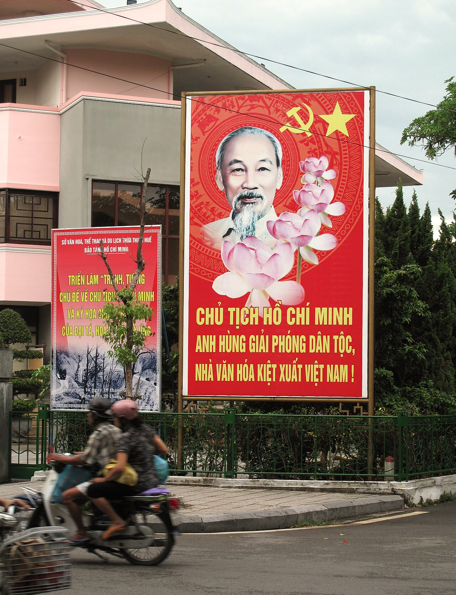
Tư tưởng Hồ Chí Minh · soi sáng con đường cách mạng Việt Nam hôm nay
Tổng kết
Hai văn kiện · một mục tiêu chung
Cương lĩnh (02/1930) và Luận cương (10/1930) là nền móng đầu tiên cho hệ thống lý luận cách mạng của Đảng Cộng sản Việt Nam.
Dù có khác biệt do nhận thức và điều kiện lịch sử, cả hai đều hướng tới mục tiêu chung: giải phóng dân tộc, giành độc lập tự do và đưa đất nước tiến lên CNXH.
Giá trị
Đến nay vẫn là ngọn cờ tư tưởng được Đảng kế thừa, vận dụng và sáng tạo.
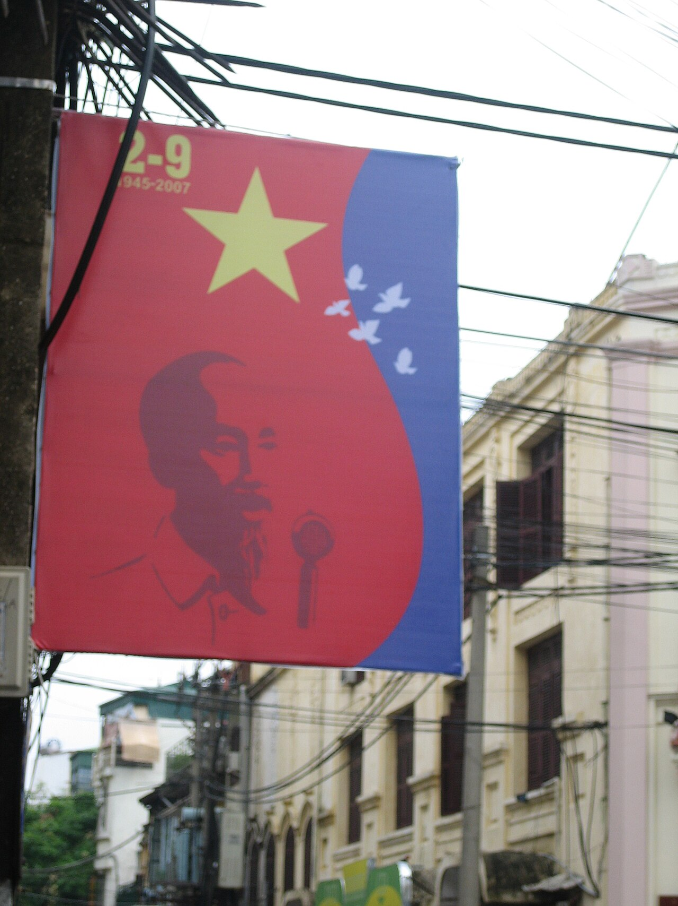
Cảm ơn cô và các bạn
Nhóm rất mong nhận được câu hỏi và góp ý · Lớp CLC-QTL49A